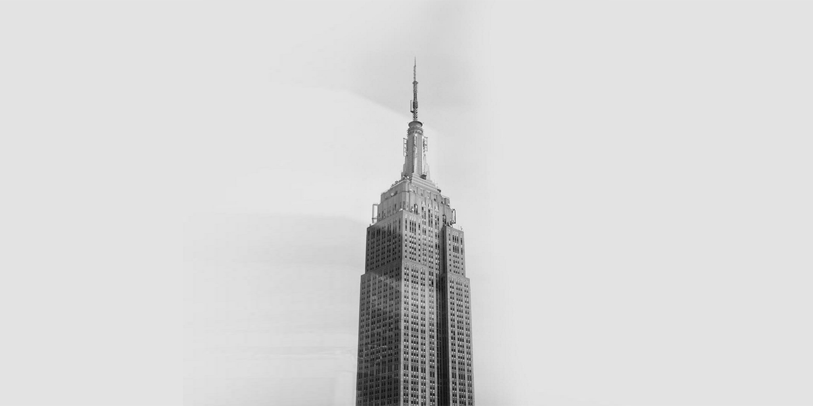

Photography is a Language...
My interests in photography and film started when I was very young, there was something in it that it gave me this absolute fascination with it. I find it a visual language— though criticized for not being a “true” form of art, there is some pseudo-science behind it.
Every photograph is an opportunity not only for personal growth as a photographer, but also an opportunity to gain insight on who you are. The most interesting thing that there is present in photographing someone is the goal to gain a deeper understanding of whom I'm photographing, genuinely getting to know something about you. It's not succumbing to a New-York rush hour mentality. It's about one on one, in the very present. You can't replicate it, no matter how hard you try.
I treat each photograph differently. I find something unique to express about you that not only shows who you want to present yourself as to casting directors, employers, but additionally shows who you are genuinely— no façades attached.
Currently, I am working in New York City.